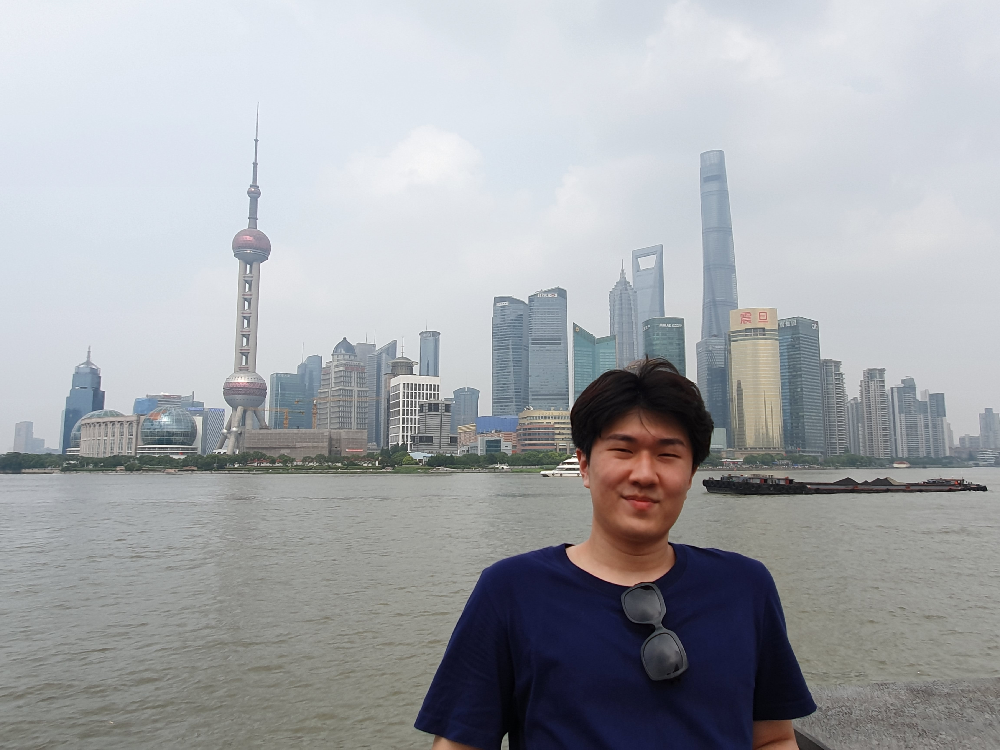
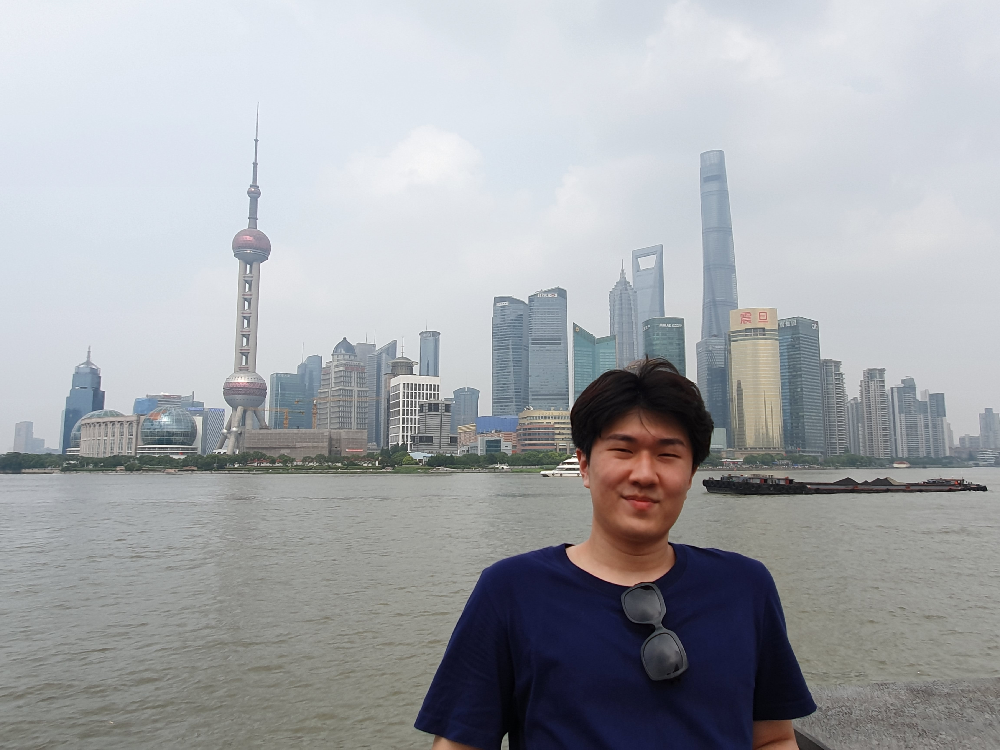

내가 가장 후회하는 것이 뭐냐고 묻는다면 아마도 즐거운 순간을 즐기기만 하고 촬영해두지 않은 해외생활이라고 대답할 것이다.
 

태국에 4년, 중국에 여러번 다니면서 정말 재밌게 놀았지만, 정작 찍어둔 것이 없어서 돌려볼 수가 없다. 그래서 앞으로는 가끔 촬영을 하기로 했다. 마침 유튜브가 대세여서 가끔 편집해 유튜브에 올리고 있다.


중국 한달살이 때는 한 달 내내 텐션이 높았다. 항저우, 상해, 리쉐이 등 남방지역을 다니면서 안가본 곳이 없다. 세계 100대 클럽, 각양각색 동물에게 먹이를 줄 수 있는 야생동물원, 항저우의 자랑인 서호, 사원 등..하지만 내게 남은 동영상이 없다.
가끔 사진은 돌려보지만 동영상으로 남겼으면 좋았을걸이라는 생각이 자주 들었다. 그래서 유튜브를 하게 되었다.
찍은 영상들을 가끔 돌려보면 다시 그 시간으로 돌아가는 느낌이다. 결국 내가 찍은 영상이고 내 목소리에 내 텐션, 기분이 다 담겨있는데다 내가 영상을 편집하면서 여러번 돌려봤기 때문에 기억이 안날래야 안날 수가 없다.
사실 유튜브에 올리는 데에는 단순히 영상보관 외에 다른 이유도 있다. 언제 어디서든 볼 수 있는 장점이 있다. 원래는 나만 볼 수 있게 비공개로 올리다가 불편해서 공개 영상으로 풀었다.
나는 살면서 3번 정도 죽을 위기를 넘겼다. 두 번은 태국에서, 한 번은 터키에서였다. 태국에서 서핑을 하다가 물에 빠졌는데 보드와 내 구명조끼가 엉켜 그대로 익사할 뻔했다. 결국 정신력으로 살아나왔지만..그리고 한번은 수영을 하다가 쥐가 나서 익사할 뻔했고 운이 좋아 구조 받았다. 마지막 한번은 터키에서 텐트 치고 야영을 하려다가 텐트가 부서졌다. 캠핑이 처음이라 더 조심했어야 했지만 이 날은 하필이면 천둥번개에 어마어마한 바람이 부는 날이었다. 운도 안좋았다..다행인건 모두 살아남았고, 터키에서는 영상으로 남길 수 있었다!

난 유튜브에 최적화된 성격은 절대 아니다. 촬영을 할 때에도 남들의 시선을 신경쓰고, 관심을 받는게 항상 좋지만은 않기 때문이다. 그래서 영상을 많이 올리지는 않지만, 다시 여유가 생기면 밀린 영상들을 편집해 올리고 싶다.